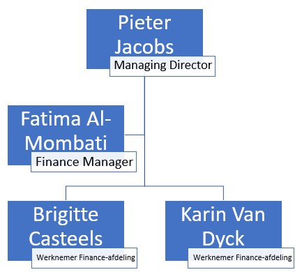

/Ecobat battery logo.jpg "logo Ecobat")
Ecobat is gespecialiseerd in producten zoals batterijen, laders en toebehoren. Op het gebied van service kunnen zij hun klanten helpen met ongeveer alles wat diens “batterijhart” verlangt, gaande van onderhoudscontracten tot capaciteitstesten. Als een klant op zoek is naar herlaadbare batterijen om te starten, voor tractiegebruik, voor verlichting, voor stand-by of voor eender welke andere toepassing, dan is de klant bij Ecobat aan het juiste adres. Als onafhankelijk bedrijf kan Ecobat de cliënt altijd informeren over het beste product voor diens toepassing. Ecobat helpt haar klanten graag in de zoektocht naar een geschikte energieoplossing. Geef Ecobat de nodige informatie over de klant zijn toepassing en het bedrijf stelt de passende batterijen en laders voor. Zo maakt de klant met kennis van zaken de juiste keuzes! De klanten van Ecobat zijn bedrijven uit binnen- en buitenland.
Al sinds 1981 is Ecobat een verdeler van accu’s en batterijladers. Dit betekent dat het bedrijf, zonder enige verplichting tegenover bepaalde merken, je altijd de beste oplossing aanbieden.
Vanaf oktober 2021 maakt de onderneming deel uit van Ecobat. Emrol is de voormalige bedrijfsnaam. Binnen de groep Ecobat behoren we tot tot de divisie Ecobat Battery. Dit is de Europese tak gespecialiseerd in de distributie en verkoop van batterijen met vestigingen in het Verenigd Koninkrijk, Ierland, Nederland, België, Frankrijk en Spanje.
Het breed assortiment bestaat uit tractiebatterijen (tractiecellen), monoblocks, lithium batterijen, startbatterijen en acculaders.
Ecobat biedt een totaalservice. Naast het leveren van batterijen, acculaders en toebehoren kan je bij hun ook terecht voor de installatie van volledige laadzalen of maatwerk en specials.
De "Finance-afdeling" (de boekhoudafdeling) inclusief de CEO Pieter Jacobs:
Een organogram van de afdeling "Customer Service"

Een organogram van de afdeling "Services en Solutions"